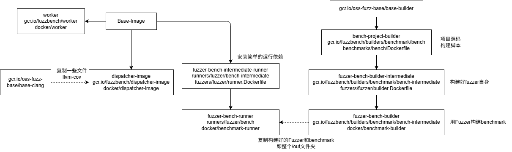

Fuzzbench的代码架构解析
Fuzzbench
使用流程：
- 根据教程创建好虚拟环境，并安装好python的包
- 调用make执行相关的debug和test-run
- 填写yaml，然后使用脚本运行实验
1 | source .venv/bin/activate |
运行相关的Make命令
- 生成Makefile：首先根目录的makefile会检查是否docker/generated.mk不存在，或者需要更新，然后使用docker/generate_makefile.py生成makefile，然后再include进来。
Fuzzer的三大文件
- builder.Dockerfile 负责下载和构建Fuzzer
- fuzzer.py 提供两个函数，分别用于构建和运行fuzzer。
- runner.Dockerfile 负责准备Fuzzer的运行环境
Fuzzing相关的Docker镜像
各个镜像的构建方式是由上面生成的Makefile命令决定的。每个镜像都在makefile里面有个target。

1 基础镜像
- base-image镜像：最基础的镜像，由于不知道的原因，每个benchmark都是基于硬编码SHA的base-image，从gcr.io下载。
- dispatcher-image：用于。之后会将docker挂载进去，因此下载了docker-client，然后安装了llvm-cov等工具。最后复制了启动脚本startup-dispatcher.sh，它调用
src/experiment/dispatcher.py。 - worker-image：它的启动命令是
rq worker $EXPERIMENT --url redis://$REDIS_HOST:6379，本地跑似乎不会用到这个镜像。
2 Fuzz镜像
- bench-builder镜像：每个Benchmark提供的基础的bench-builder镜像里面负责存储项目的源码，并放好相关的构建脚本
$SRC/build.sh。 - builder-intermediate镜像（Fuzzer的builder.Dockerfile）：
fuzzers/xxx/builder.Dockerfile：每个Fuzzer提供的两个dockerfile之一。它开头是固定的通过参数传入Paren Image。该镜像负责在原有的bench-builder镜像中构建好fuzzer自身，然后得到builder-intermediate镜像。
1 | ARG parent_image |
- builder镜像：基于builder-intermediate镜像，使用统一的dockerfile（
docker/benchmark-builder/Dockerfile），开始用Fuzzer的插桩去构建Target。它安装了fuzzbench需要的python3，用于运行Fuzzer提供的三大文件之一的fuzzer.py。最后提供了一个fuzzer_build脚本，内部主要运行的是python3 -c "from fuzzers import utils; utils.initialize_env(); from fuzzers.$FUZZER import fuzzer; fuzzer.build()"，而给fuzzers提供的编译Target的接口utils.build_benchmark内部就是用bash执行$SRC/build.sh这个就是最早bench-builder镜像放好的构建脚本。
最终编译好的Target的相关文件会被放到OUT=/out。同时fuzzer.py也要将Fuzzer自身的binary放过去。
intermediate-runner镜像（Fuzzer的runner.Dockerfile）：从最基础的Base镜像，使用runner.Dockerfile构建，给fuzzer准备一些辅助的环境，比如安装一些包，设置一些环境变量。对于简单的fuzzer，这里是可以是空的。由于从Base重新构建，这里面不含任何Target和Fuzzer的东西。
runner镜像：使用
docker/benchmark-runner/Dockerfile统一构建。将builder镜像里面构建好的Fuzzer和Target复制到intermediate-runner镜像，然后复制了一些fuzzbench的源码进去，最后设置了entry point为docker/benchmark-runner/startup-runner.sh。使用docker的multi-stage build特性。
相关的debug target
- builder-debug镜像：在builder镜像的基础上增加了个
--build-arg debug_builder=1。 - debug-builder-xxx Target：在builder-debug镜像上给shell。
- debug-xxx Target：在runner镜像上给一个shell
--entrypoint "/bin/bash" - test-run
Target：在runner镜像基础上设置
SNAPSHOT_PERIOD=10，MAX_TOTAL_TIME=20
特殊的Fuzzer
- Coverage镜像：有个特殊的fuzzer叫做Coverage，内部其实是一个LLVM的Libfuzzer(LLVM的那个fuzzer)。它负责测量实验过程中的coverage：实验过程中提取所有的queue里的种子，然后拿这个插桩的binary跑一遍得到coverage信息。
启动一次实验
主要的入口是experiment/run_experiment.py。在运行前会把源码打包tar.gz到实验目录的input/src.tar.gz，然后再启动runner的时候解压到/work/src。这也是为什么每次跑实验都会打印一遍所有源码文件路径，因为是tar在解压。
实验的docker数量 = benchmark数量 * Fuzzer数量 * 重复数量 + 1
这里我们称某个（benchmark，fuzzer，trial）是一个pair，对应一个docker。
Docker架构：处理跑实验的fuzzer容器，还有负责总体管理的dispatcher容器。就这两部分。
Runner容器
主要逻辑在experiment/runner.py。python主线程，首先启动runner线程跑具体的fuzzer，然后就不断sleep等待每个cycle，然后遍历/out/corpus文件夹，把修改日期更新的文件压缩一下，存放到corpus-archives文件夹。
Dispatcher容器
主要逻辑在experiment/dispatcher.py。会挂载docker
socks进去，所以能够启动docker镜像。会把experiment folder和report
folder按照主机完全一致的路径挂载进去。
- 构建镜像根据上面镜像的构建流程，得到最终runner镜像。具体就是使用docker依次构建Fuzzer，使用Fuzzer的Toolchain构建Fuzz Target，最后将构建好的Target放到Fuzzer一起准备运行。
- 然后会将相关的参数转存并启动dispatcher-image，执行dispatcher.py。
- dispatcher容器内部会启动scheduler_loop_thread
- dispatcher容器内部会启动measurer进程。
- 然后一边等待实验结束，一边生成临时的report。
Scheduler和Measurer进程
两个进程的输出都是打印到stdout里的，即dispatcher的输出，或者说整个运行脚本的输出。但是里面的
- scheduler：它会不断获取相关的需要运行的某个pair，然后执行启动流程（start_trials）。内部创建一个专门的脚本（render_startup_script_template），启动对应的runner。
- Measurer：主函数执行measure_manager_inner_loop，负责发送请求给measurers_cpus数量的子进程。子进程接受到请求就拉取queue然后测量coverage。这里有一个DEFAULT_SNAPSHOT_SECONDS=900s，以这个为周期编号，每隔这么久，那边Runner就会保存一下最新的种子到压缩包。然后这边Measurer就会从数据库找没有测量的周期，然后生成任务给worker，即尝试去拉取所有的fuzzer的coverage压缩包，解压并运行，测量一下Coverage。Coverage测量完直接存入数据库。
数据库相关
- Experiment表: 存储实验信息
- Trial表: 存储每个试验的信息 (fuzzer + benchmark组合)
- Snapshot表: 存储测量快照数据 (第812行的measured_snapshots就是这些对象)
- Crash表: 存储崩溃信息
Coverage的测量原理
首先用插桩过的binary跑输入，生成profraw文件，然后合并
1
2
3llvm-profdata merge -sparse /work/measurement-folders/sqlite3_ossfuzz-honggfuzz_latest/trial-23/reports/data.profdata -o /work/measurement-folders/sqlite3_ossfuzz-honggfuzz_latest/merged.profdata
llvm-cov export -format=text -num-threads=1 -region-coverage-gt=0 -skip-expansions /work/coverage-binaries/sqlite3_ossfuzz/ossfuzz -instr-profile=/work/measurement-folders/sqlite3_ossfuzz-honggfuzz_latest/merged.profdata
cp /work/coverage/data/sqlite3_ossfuzz/honggfuzz_latest/covered_branches.json /xxx/experiment-data/debug16/coverage/data/sqlite3_ossfuzz/honggfuzz_latest/covered_branches.json